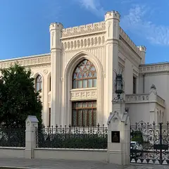
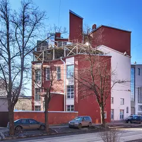
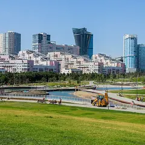
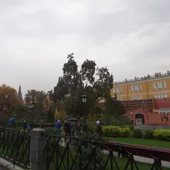
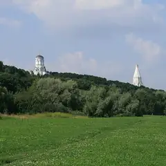
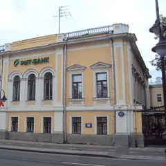
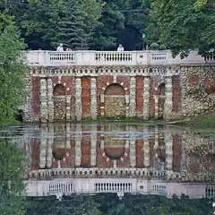

Сезон · данные на 27 ноября
Куда сходить осенью в Москве
158 планов и 120 мест, где особенно красиво в сентябре и октябре: парки и усадьбы, сады и набережные — например, «Гоголевский бульвар», «Особняк Зинаиды Морозовой» и «Патриаршие пруды». После прогулки — кофейня, чайная или ужин в паре минут ходьбы.
- 158 планов
- 120 мест
Осенние планы 24 из 158
- Гоголевский бульвар · Бульвар · м. Кропоткинская
- 3 минуты пешкомFinch · Кафе
Неспешная прогулка по Гоголевскому бульвару и пара минут до Большого Афанасьевского, где можно засесть за поздний завтрак и десерты.
Открыть план: Бульвар и бранч в переулкеПозвать сюда: Бульвар и бранч в переулке
Фото: Alina Vozna, CC BY-SA 4.0 · Wikimedia Commons
- Гоголевский бульвар · Бульвар · м. Кропоткинская
- 6 минут пешкомANTIПА · Кафе
Неспешно пройтись по Гоголевскому бульвару и через пять минут сесть завтракать в тихом переулке. Спокойное начало выходного дня.
Открыть план: Бульвар и поздний завтракПозвать сюда: Бульвар и поздний завтрак
Фото: Alina Vozna, CC BY-SA 4.0 · Wikimedia Commons
- Галерея «Другое дело» · Галерея в старинной усадьбе · м. Красные Ворота
- 2 минуты пешкомПублика · Ресторан
Сначала выставка в старинной усадьбе, потом через пару минут пешком — ужин с домашней кухней и вечерними коктейлями.
Открыть план: Галерея в усадьбе и ужин рядомПозвать сюда: Галерея в усадьбе и ужин рядом
Фото: Svetlov Artem, CC BY-SA 4.0 · Wikimedia Commons

- Особняк Зинаиды Морозовой · Особняк · м. Баррикадная
- 5 минут пешкомПатриаршие пруды · Пруд и сквер
- 4 минуты пешкомThe Bix · Джаз-бар
В сумерках особняк с башнями выглядит особенно загадочно. Оттуда пять минут до пруда и ещё столько же до джаз-бара, где вечер продолжается под живую музыку.
Открыть план: Готика, пруд и джазПозвать сюда: Готика, пруд и джаз
Фото: Vzorets, CC BY-SA 4.0 · Wikimedia Commons
- Особняк Зинаиды Морозовой · Особняк · м. Баррикадная
- 5 минут пешкомПатриаршие пруды · Пруд и сквер
- 2 минуты пешкомI love cake · Кондитерская
Рассмотреть неоготический особняк, за четыре минуты дойти до Патриарших и сделать круг у воды, а потом вернуться на десерт в кондитерскую рядом.
Открыть план: Замок на Спиридоновке и прудПозвать сюда: Замок на Спиридоновке и пруд
Фото: Vzorets, CC BY-SA 4.0 · Wikimedia Commons
- Парк «Зарядье» · Парк · м. Китай-город
- 10 минут пешкомСофия · Кофейня
Прогулка по парку и парящему мосту, затем десять минут через реку до кофейни с окнами на Кремль. Виды с обоих берегов за одну встречу.
Открыть план: Зарядье и кофе в колокольнеПозвать сюда: Зарядье и кофе в колокольне
Фото: Alina Vozna, CC BY-SA 4.0 · Wikimedia Commons
- Московский зоопарк · Зоопарк · м. Баррикадная
- 11 минут пешкомКафедра · Кофейня
Погулять среди вольеров, пока светло, и за десять минут дойти до кофейни согреться. Простой план без пафоса, где легко найти темы для разговора.
Открыть план: Зоопарк и тёплая кофейняПозвать сюда: Зоопарк и тёплая кофейня
Фото: A.Savin, Free Art License · Wikimedia Commons

- Клуб имени Русакова · Авангард Мельникова · м. Сокольники
- 12 минут пешкомСокольники · Парк
Три бетонных зуба зрительного зала над Стромынкой, а потом прогулка по аллеям Сокольников.
Открыть план: Клуб-шестерёнка Мельникова и СокольникиПозвать сюда: Клуб-шестерёнка Мельникова и Сокольники
Фото: Ludvig14, CC BY-SA 4.0 · Wikimedia Commons
- Особняк Зинаиды Морозовой · Особняк · м. Баррикадная
- 6 минут пешкомДом-музей Чехова · Музей
- 11 минут пешкомMátes · Кофейня
Два дома с историей в пяти минутах друг от друга: снаружи замок Морозовой, внутри скромный быт писателя. После музея — кофе неподалёку, чтобы обсудить увиденное.
Открыть план: Особняк и дом ЧеховаПозвать сюда: Особняк и дом Чехова
Фото: Vzorets, CC BY-SA 4.0 · Wikimedia Commons
- Тюфелева роща · Парк · м. ЗИЛ
- 3 минуты пешкомСерый дом · Ресторан
Проходите по парку с длинной перголой и за пару минут оказываетесь у ресторана. Современный парк и нарядный зал хорошо оттеняют друг друга.
Открыть план: Роща и ужин с ШагаломПозвать сюда: Роща и ужин с Шагалом
Фото: A.Savin, Free Art License · Wikimedia Commons
- Введенское кладбище · Некрополь · м. Лефортово
- 20 минут пешкомЛефортовский парк · Парк
Сначала тихие аллеи с готическими надгробиями, затем минут пятнадцать пешком до парка с прудами и плотинами. Долгая прогулка, в которой хватает времени на разговор.
Открыть план: Склепы и старый парк ЛефортоваПозвать сюда: Склепы и старый парк Лефортова
Фото: Никонико962, CC BY-SA 4.0 · Wikimedia Commons

- Парк «Ходынское поле» · Парк · м. ЦСКА
- 8 минут пешкомPharmacie · Ресторан
Пройтись по парку на Ходынке, затем шесть минут до ресторана в аптечном стиле: винный зал среди бочек и сезонное меню вроде каштанового супа.
Открыть план: Ходынское поле и ужин среди бочекПозвать сюда: Ходынское поле и ужин среди бочек
Фото: mos.ru, CC BY 4.0 · Wikimedia Commons
Прогулка по дворцовому ансамблю и парку, а потом кофе с десертом в старинной галерее с видом на Верхний пруд.
Открыть план: Царицыно и кофе у прудаПозвать сюда: Царицыно и кофе у пруда
Фото: Marina Lystseva, CC BY-SA 3.0 · Wikimedia Commons
- Чистые пруды · Бульвар и пруд · м. Чистые пруды
- 5 минут пешкомОстров Пасхи · Кафе
Круг по бульвару у пруда и пять минут до необычного кафе с подземным залом. После прогулки на холоде приятно сесть в тепле и разговориться.
Открыть план: Чистые пруды и кофе в катакомбахПозвать сюда: Чистые пруды и кофе в катакомбах
Фото: SergeyStepykin, CC BY-SA 3.0 · Wikimedia Commons
- Сокольники · Парк · м. Сокольники
- 1 минута пешкомGreen Park · Ресторан в парке
Лучевые аллеи в золоте и выход в лес, а потом обед в ресторане прямо в парке.
Открыть план: Аллеи СокольниковПозвать сюда: Аллеи Сокольников
Фото: Alexx Zimin, CC BY-SA 4.0 · Wikimedia Commons
- Белое озеро в Косине · Озеро и яхт-клуб · м. Улица Дмитриевского
- 21 минута пешкомМосква — на волне · Рыбный рынок
Прогулка у Белого озера в Косине мимо разноцветных домиков яхт-клуба, а потом рынок «Москва — на волне»: выбираешь рыбу на прилавке, и её готовят при тебе.
Открыть план: Белое озеро и рыбный рынокПозвать сюда: Белое озеро и рыбный рынок
Фото: Sergey Ashmarin, CC BY-SA 3.0 · Wikimedia Commons
- Парк Горького · Парк · м. Октябрьская
- 11 минут пешкомSUBSTANCE · Бильярд-бистро
Прогулка по набережной и пара партий в бильярд-бистро SUBSTANCE.
Открыть план: Бильярд в Парке ГорькогоПозвать сюда: Бильярд в Парке Горького
Фото: A.Savin, Free Art License · Wikimedia Commons
- Патриаршие пруды · Пруд и сквер · м. Маяковская
- 1 минута пешкомERWIN.Павильон · Ресторан на пруду
Неспешный круг вокруг пруда из «Мастера и Маргариты», а потом бранч в ресторане-павильоне Erwin прямо у пруда — он открыт с 9:00.
Открыть план: Бранч на ПатрикахПозвать сюда: Бранч на Патриках
Фото: Dimа, CC BY-SA 3.0 · Wikimedia Commons
- Гоголевский бульвар · Бульвар · м. Кропоткинская
- 3 минуты пешкомИНО М2 · Гастропространство
Гоголевский бульвар и большое гастропространство в конструктивистском здании.
Открыть план: Бульвар и гастропространствоПозвать сюда: Бульвар и гастропространство
Фото: Alina Vozna, CC BY-SA 4.0 · Wikimedia Commons
- Гоголевский бульвар · Бульвар · м. Кропоткинская
- 4 минуты пешкомНитка · Русская чайная
Гоголевский бульвар под жёлтыми липами и долгий чай в отдельной комнате «Нитки».
Открыть план: Бульвар и самоварПозвать сюда: Бульвар и самовар
Фото: Alina Vozna, CC BY-SA 4.0 · Wikimedia Commons
- Чистые пруды · Бульвар и пруд · м. Чистые пруды
- 12 минут пешкомKeep · Гастробар
Круг по Чистым прудам в сумерках, потом свечи и росписи с ангелами в готическом гастробаре Keep во дворах Мясницкой.
Открыть план: Бульвары и готический ужинПозвать сюда: Бульвары и готический ужин
Фото: SergeyStepykin, CC BY-SA 3.0 · Wikimedia Commons
- Патриаршие пруды · Пруд и сквер · м. Маяковская
- 3 минуты пешкомGrand Cru · Ресторан высокой кухни
Прогулка по Патрикам и ужин в Grand Cru с одной из лучших винных карт Москвы.
Открыть план: Вино Grand CruПозвать сюда: Вино Grand Cru
Фото: Dimа, CC BY-SA 3.0 · Wikimedia Commons
- Парк 40-летия Победы · Парк · Зеленоград — Крюково (МЦД-3)
- 19 минут пешкомЗеленоградский лесопарк · Лесопарк
Парк с прудом и прогулка по Зеленоградскому лесопарку.
Открыть план: Выходной в ЗеленоградеПозвать сюда: Выходной в Зеленограде
Фото: Sergey A. Demidov, CC BY 4.0 · Wikimedia Commons
- Музей «Гараж» · Музей современного искусства · м. Парк культуры
- 25 минут пешкомНескучный сад · Парк
Современное искусство, а потом долгая прогулка вдоль реки в самую тихую часть Парка Горького.
Открыть план: Гараж и Нескучный садПозвать сюда: Гараж и Нескучный сад
Фото: Garage Museum of Contemporary Art, CC BY-SA 4.0 · Wikimedia Commons


Где красиво осенью 24 из 120
Гоголевский бул.
Тенистый бульвар от Арбатской площади к Храму Христа Спасителя.
Подробнее и маршрут: Гоголевский бульварПозвать сюда: Гоголевский бульвар
Фото: Alina Vozna, CC BY-SA 4.0 · Wikimedia Commons
ул. Спиридоновка, 17
Новое
Неоготический особняк, похожий на английский замок, с интерьерами по эскизам Врубеля; красивая точка для прогулки по Спиридоновке.
Подробнее и маршрут: Особняк Зинаиды МорозовойПозвать сюда: Особняк Зинаиды Морозовой
Фото: Vzorets, CC BY-SA 4.0 · Wikimedia Commons
Большой Патриарший пер.
Пруд из «Мастера и Маргариты»: скамейки, кафе вокруг, зимой — каток.
Подробнее и маршрут: Патриаршие прудыПозвать сюда: Патриаршие пруды
Фото: Dimа, CC BY-SA 3.0 · Wikimedia Commons
Чистопрудный бул.
Бульвар с прудом: летом лодки и лебеди, зимой каток. Рядом Меншикова башня.
Подробнее и маршрут: Чистые прудыПозвать сюда: Чистые пруды
Фото: SergeyStepykin, CC BY-SA 3.0 · Wikimedia Commons
Ботаническая ул., 4
Японский сад в Ботаническом: пагода, водопады и сакура весной. Вход платный.
Подробнее и маршрут: Японский садПозвать сюда: Японский сад
Фото: Carbonkidka, CC BY-SA 4.0 · Wikimedia Commons

Александровский сад
Сад вдоль Кремлёвской стены: Вечный огонь, Итальянский грот и смена почётного караула.
Подробнее и маршрут: Александровский садПозвать сюда: Александровский сад
Фото: Надежда Пивоварова, CC BY-SA 3.0 · Wikimedia Commons
ул. Косыгина, смотровая площадка
Лесистый склон над Москвой-рекой. У главного здания МГУ — смотровая с видом на Лужники и Сити.
Подробнее и маршрут: Воробьёвы горыПозвать сюда: Воробьёвы горы
Фото: Niklitov, CC BY-SA 4.0 · Wikimedia Commons
Старая Басманная ул., 15А, стр. 4
Антикварная галерея в особняке XVIII века на Басманной: джаз у винтажного рояля, кабаре и вечера по мотивам фильмов Дэвида Линча.
Подробнее и маршрут: Галерея «Другое дело»Позвать сюда: Галерея «Другое дело»
Фото: Svetlov Artem, CC BY-SA 4.0 · Wikimedia Commons

пр. Андропова, 39
Холмы над рекой, белая церковь Вознесения и деревянный дворец царя Алексея Михайловича.
Подробнее и маршрут: КоломенскоеПозвать сюда: Коломенское
Фото: Ludvig14, CC BY-SA 4.0 · Wikimedia Commons
Крымский Вал, 2
Парк скульптур и прогулка по набережной Москвы-реки.
Подробнее и маршрут: МузеонПозвать сюда: Музеон
Фото: sailko, CC BY-SA 3.0 · Wikimedia Commons
ул. Варварка, 6
Парящий мост над Москвой-рекой и вид на Кремль. Сам парк открыт круглосуточно.
Подробнее и маршрут: Парк «Зарядье»Позвать сюда: Парк «Зарядье»
Фото: Alina Vozna, CC BY-SA 4.0 · Wikimedia Commons
ул. Крымский Вал, 9
Главный парк города: набережная, Голицынский пруд, летние веранды, а зимой — большой каток.
Подробнее и маршрут: Парк ГорькогоПозвать сюда: Парк Горького
Фото: A.Savin, Free Art License · Wikimedia Commons

ул. Пятницкая, 42
Отель-ресторан с садом, вермутерией и галереей в Замоскворечье. 9–00.
Подробнее и маршрут: РихтерПозвать сюда: Рихтер
Фото здания: Kemal KOZBAEV, CC BY-SA 4.0 · Wikimedia Commons
ул. Сокольнический Вал, 1
Большой парк с лучевыми аллеями, розарием, прокатом и выходом в лес.
Подробнее и маршрут: СокольникиПозвать сюда: Сокольники
Фото: Alexx Zimin, CC BY-SA 4.0 · Wikimedia Commons
Большая Косинская ул., 45
Яхт-клуб на Белом озере: прогулочная зона, разноцветные домики и атмосфера курортного городка на востоке Москвы.
Подробнее и маршрут: Белое озеро в КосинеПозвать сюда: Белое озеро в Косине
Фото: Sergey Ashmarin, CC BY-SA 3.0 · Wikimedia Commons
Новоясеневский просп., 21 к3
Огромный лес на юго-западе: экотропы, родники и конноспортивный комплекс.
Подробнее и маршрут: Битцевский лесПозвать сюда: Битцевский лес
Фото: Stolbovsky, CC BY-SA 4.0 · Wikimedia Commons
Наличная ул., 1
Новое
Старинный некрополь с готическими склепами и надгробиями; место для тихой прогулки и разговоров не о работе.
Подробнее и маршрут: Введенское кладбищеПозвать сюда: Введенское кладбище
Фото: Никонико962, CC BY-SA 4.0 · Wikimedia Commons
ул. Вильгельма Пика
Китайский сад с пагодами, мраморными мостиками и прудом с карпами. Вход бесплатный, 8:00–22:00.
Подробнее и маршрут: Китайский парк «Хуамин»Позвать сюда: Китайский парк «Хуамин»
Фото: Soluxe Hotel Moscow, CC BY-SA 4.0 · Wikimedia Commons
ул. Юности, 2
Усадьба Шереметевых: дворец, Голландский домик, Грот и большой пруд.
Подробнее и маршрут: КусковоПозвать сюда: Кусково
Фото: A.Savin, Free Art License · Wikimedia Commons

Красноказарменная ул., 1
Старинный регулярный парк с прудами и гротом — одно из самых тихих мест в городе.
Подробнее и маршрут: Лефортовский паркПозвать сюда: Лефортовский парк
Фото: A.Savin, CC BY-SA 3.0 · Wikimedia Commons
ул. Большая Грузинская, 1
Старейший зоопарк страны на Баррикадной: панды, слоны и новая территория через мостик.
Подробнее и маршрут: Московский зоопаркПозвать сюда: Московский зоопарк
Фото: A.Savin, Free Art License · Wikimedia Commons
Пушкинская наб. (Парк Горького)
Тихая часть Парка Горького: старые деревья, овраги и набережная без толпы.
Подробнее и маршрут: Нескучный садПозвать сюда: Нескучный сад
Фото: A.Savin, Free Art License · Wikimedia Commons
Новодевичий пр., Москва
Пруды у стен Новодевичьего монастыря — одна из самых красивых прогулок в Москве.
Подробнее и маршрут: Новодевичьи прудыПозвать сюда: Новодевичьи пруды
Фото: Uwe Brodrecht, CC BY-SA 2.0 · Wikimedia Commons
ул. Свободы, 50
Парк у Химкинского водохранилища с подводной лодкой-музеем и экранопланом.
Подробнее и маршрут: Парк «Северное Тушино»Позвать сюда: Парк «Северное Тушино»
Фото: Mardiver, CC0 · Wikimedia Commons


Как позвать
- Выбери план, место или событие — в карточке адрес, цены и маршрут в Яндекс Картах.
- Нажми «Позвать сюда» — соберётся приглашение-игра для свидания или голосование для компании.
- Отправь ссылку в любой мессенджер: тебе ответят, а компания отметит, куда и когда может. Бесплатно и без регистрации.